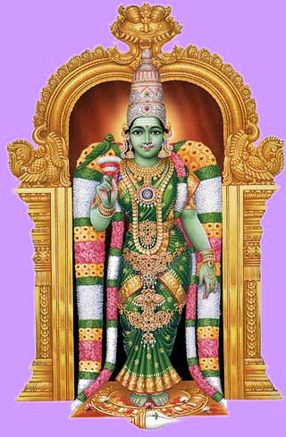

mailto:payer@payer.de
Zitierweise | cite as:
Payer, Alois <1944 - >: Sanskritkurs. -- 6. Lektion 6. -- Fassung vom 2008-11-24. -- URL: http://www.payer.de/sanskritkurs/lektion06.htm
Erstmals hier publiziert: 2008-11-20
Überarbeitungen: 2008-11-24 [Ergänzungen]
Anlass: Lehrveranstaltungen 1980 - 1984
©opyright: Dieser Text steht der Allgemeinheit zur Verfügung. Eine Verwertung in Publikationen, die über übliche Zitate hinausgeht, bedarf der ausdrücklichen Genehmigung des Verfassers
Dieser Text ist Teil der Abteilung Sanskrit von Tüpfli's Global Village Library
Falls Sie die diakritischen Zeichen nicht dargestellt bekommen, installieren Sie eine Schrift mit Diakritika wie z.B. Tahoma.
Die Devanāgarī-Zeichen sind in Unicode kodiert. Sie benötigen also eine Unicode-Devanāgarī-Schrift.
Schema I: Verbalform
Schema II: Agens (kartṛ m. = कर्तृ) - Verbalform
|
Wird der Agens (kartṛ m. = कर्तृ) in einem Verbalsatz genannt, der nicht im Passiv steht, dann steht der Agens im Nominativ (erster Fall, prathamā = प्रथमा). Im Numerus (Zahl, vacana n. = वचन) stimmen dann Agens und Verbalform überein.
Eine finite Verbalform, d.h. eine Verbalform mit Personalendung, drückt im Sanskrit Folgendes aus:
Das Präsens ist das Tempus der Gegenwart, insbesondere auch der Dauer.
| Der Indikativ (Aussageform) Präsens wird gebildet, indem an den Präsensstamm die sogenannten Primärendungen angefügt werden |
z.B.
| Wurzel (dhātu = धातु) |
Präsensstamm | 3. Person singular Indikativ Präsens Parasmaipada |
|---|---|---|
| viś = विश् | viśa = विश | viśati = विशति = "er (sie, es) tritt ein" |
| bhū = भू | bhava = भव | bhavati = भवति = "er (sie, es) entsteht" |
| nṛt = नृत् | nṛtya = नृत्य | nṛtyati = नृत्यति = "er (sie, es) tanzt" |
| Singular Einzahl ekavacana n. एकवचन |
Plural Mehrzahl bahuvacana n. बहुवचन |
|
|---|---|---|
| Parasmaipada n. परस्मैपद |
-ti -ति |
-nti -न्ति |
| Ātmanepada आत्मनेपद |
-te -ते |
-nte -न्ते |
z.B.
yaj = यज् = "mit einem Opfer verehren", "opfern"
Präsensstamm: yaja = यज
3. sg. P. yajati = यजति
3. pl. P. yajanti = यजन्ति3. sg. Ā. yajate = यजते
3. pl. Ā. yajante = यजन्ते
| Präsensstamm = Wurzel in Tiefstufe (in der sie aufgeführt wird) + a- | |
| Wurzel dhātu m. धातु |
Präsensstamm |
|---|---|
| viś विश् |
viśa- विश- |
| sṛj सृज् |
sṛja- सृज |
| Präsensstamm = Wurzel in Hochstufe (selten Dehnstufe) + a- | |||
| Wurzel dhātu m. धातु |
Hochstufe | Hochstufe vor a- | Präsensstamm |
|---|---|---|---|
| bhū भू |
bho भो |
bhav भव् |
bhava- भव- |
| nī नी |
ne ने |
nay नय् |
naya- नय- |
| smṛ स्मृ |
smar स्मर् |
smar स्मर् |
smara- स्मर- |
| yaj यज् |
yaj यज् |
yaj यज् |
yaja- यज- |
| Steht der Vokal in langer geschlossener Silbe, d.h. Kurzvokal vor zwei oder mehr Konsonanten , unterbleibt die Bildung der Hochstufe | |||
| nind निन्द् |
nind निन्द् |
nind निन्द् |
ninda- निन्द- |
| Vor Vokalen wird im Wortinnern e durch ay, o durch av ersetzt. |
| Tiefstufe Schwundstufe |
Hochstufe Vollstufe Guṇa m. गुण |
Dehnstufe Vṛddhi f. वृद्धि |
|---|---|---|
| ø | a | ā |
| i/ī | e | ai |
| u/ū | o | au |
| ṛ/ṝ | ar | ār |
| ḷ | al | āl |
| Präsensstamm = Wurzel in Tiefstufe (in der sie aufgeführt wird) + ya- | |
| Wurzel dhātu m. धातु |
Präsensstamm |
|---|---|
| nṛt नृत् |
nṛtya- नृत्य- |
| muh मुह् |
muhya- मुह्य- |
| yudh युध् |
yudhya- युध्य- |
| man मन् |
manya- मन्य- |
|
Das a in den Stammbildungssuffixen von Präsensklassen nennt man Themavokal. Präsensklassen mit a im Stammbildungssuffix heißen deswegen "thematische Präsensklassen". |
N. N. kiṃ karoti? = N.N. किं करोति ="Was tut N. N.?"
N. N. (plural) kiṃ kurvanti? = N.N. किं कुर्वन्ति = "Was tun die N.N.s."
karoti, kurvanti = करोति, कुर्वन्ति zu kṛ = कृ 8 U: "tun, machen"
kiṃ kuśalam? = किं कुशलम् = "Geht es Ihnen gut?, Wie geht es Ihnen?"
Antwort:
sarvathā kuśalam = सर्वथा कुशलम् = (Es geht mir) in jeder Hinsicht gut.
| Im Sanskrit werden die Verben in der Wurzel-Form
angeführt. Die Zahl nach der Wurzel bedeutet die Konjugationsklasse. P: Wurzel ist nur Parasmaipada Ā: Wurzel ist nur Ātmanepada U: Ubhayapada ("beide Wortformen"): Wurzel wird im Parasmaipada und Ātmanepada verwendet, im Ātmanepada im spezifischen Ātmanepada-Sinn (wenn etwas im eigenen Interesse geschieht) (): In Klammern steht in den Wortlisten die 3. Person (prathama) Singular Präsens Indikativ (laṭ) |
Lernen Sie folgende Wörter:
yaj 1 U (yajati) यज् यजति : mit einem Opfer verehren, opfern
bhū 1 P (bhavati) भू भवति : werden, entstehen, sein
smṛ 1 P (smarati) स्मृ स्मरति : vergegenwärtigen, sich erinnern
nṛt 4 P (nṛtyati) नृत् नृत्यति : tanzen
nī 1 U (nayati) नी नयति: führen
man 4 Ā (manyate) मन् मन्यते: denken
muh 4 P (muhyati) मुह् मुह्यति : verwirrt sein
yudh 4 Ā (yudhyate) युध् युध्यते : kämpfen
viś 6 P (viśati) विश् विशति : eintreten
sṛj 6 P (sṛjati) सृज् सृजति : loslassen, aus sich entlassen: emanieren lassen
A) Bilden Sie mit den in Klammern angegebenen Wurzeln durch Einsetzen Verbalsätze:
brāhmaṇas ... (yaj, nṛt, viś, man, yudh, nī, muh)
ब्राह्मणस् ... यज्, नृत्, विश्, मन्, युध्, नी, मुह्
devas ... (nṛt, yudh, smṛ, sṛj)
देवस् ... नृत्, युध्, स्मृ, सृज्
kavis ... (man, smṛ, viś)
कविस् ... मन्, स्मृ, विश्
dhenus ... (viś, bhū)
धेनुस् ... विश्, भू
B) Setzen Sie die in Übung A gebildeten Sätze in den Plural
C) Übersetzen Sie ins Sanskrit:
Śivo nṛtyati
शिवो नृत्यति
Śiva Naṭarāja (नटराज):, Kadavul Hindu Temple, Kauai, Hawaii
[Bildquelle: Himalayan Academy Publications, Kapaa, Kauai,
Hawaii / Wikipedia. -- Creative Commons-
Attribution-ShareAlike 2.5 - Lizenz]
A) Einsetzübung: Bilden Sie Fragen, auf die die Sätze, die sie nach folgenden Einsetzübungen bilden, antworten sind:
1. devas ... (īśvara, nṛt, sṛj, agni, indra)
देवस् ... ईश्वर, नृत्, सृज्, अग्नि, इन्द्र
2. (dvija, sādhu, kavi) ... brāhmaṇaḥ
द्विज, साधु, कवि ... ब्राह्मणः
3. (śruti) ... vedaḥ
श्रुति ... वेदः
4. (veda) ... śrutiḥ
वेद ... श्रुतिः
5. (brāhmaṇa, guru) ... yajanti
ब्राह्मण, गुरु ... यजन्ति
6. (devī) ... indrāṇī
देवी ... इन्द्राणी
7. (śūdra, śūdrā, devī) ... nṛtyanti
शूद्र, शूद्रा, देवी ... नृत्यन्ति
8. (kṣatriya) ... yudhyante
क्षत्रिय ... युध्यन्ते
9. (brāhmaṇa, brāhmaṇī) ... viśanti
ब्राह्मण, ब्राह्मणी ... विशन्ति
10. (guru) ... candrakīrtiḥ
गुरु ... चन्द्रकीर्तिः
11. (sādhu) ... rāmaḥ
साधु ... रामः
B) Setzen Sie in den Plural:
1. brāhmaṇo yajati.
ब्राह्मणो यजति |
2. kaiṣā.
कैषा |
3. kṣatriyo yajate.
क्षत्रियो यजते |
4. sādhvī smarati.
साध्वी स्मरति |
5. vaiśyā muhyati.
वैशश्या मुह्यति |
6. sṛjati.
सृजति |
7. devī manyate.
देवी मन्यते |
8. gururviśati.
गुरुर्विशति |
9. ko 'yam.
को ऽयम् |
10. iyaṃ devī nṛtyati.
इयं देवी नृत्यति |
11. eṣa devo yudhyate.
एष देवो युध्यते |
12. sa sṛjati.
स सृजति |
13. paśurdhenuḥ.
पशुर्धेनुः |
14. keyam.
केयम् |
C) Bilden Sie das Ātmanepada zu:
1. rāmo yajati.
रामो यजति |
2. kṣatriyā nayanti.
क्षत्रिया नयन्ति |
D) Bilden Sie das Femininum zu:
1. śūdro nayati.
शूद्रो नयति |
2. sādhurviśati.
साधुर्विशति |
3. brāhmaṇaḥ smarati.
ब्राह्मणः स्मरति |
4. kṣatriyo yudhyate.
क्षत्रियो युध्यते |
5. devo guruḥ.
देवो गुरुः |
E) Übersetzen Sie:
1. devatānnapūrṇā.
देवतान्नपूर्णा |
2. śūdretarā.
शूद्रेतरा |
3. vaiśyastulādhāraḥ.
वैश्यस्तुलाधारः |
4. kavirmāghaḥ.
कविर्माघः |
5. devyumā.
देव्युमा |
6. śrutirvedaḥ.
श्रुतिर्वेदः |
7. dhenurviśati.
धेनुर्विशति |
8. guruścaitanyaḥ.
गुरुश्चैतन्यः |
9. devīndrāṇī.
देवीन्द्राणी |
10. sādhurguruḥ.
साधुर्गुरुः |
11. gururyajate.
गुरुर्यजते |
F) Übersetzen Sie ins Sanskrit:

Zu Lektion 7